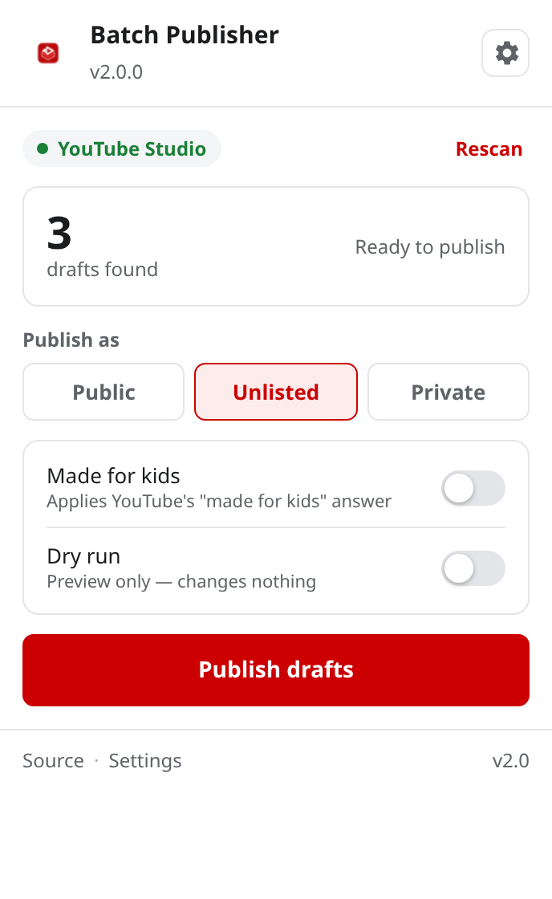

Usage
From opening Studio to a finished batch, in about a minute.
Publishing drafts
- Open your content page Go to YouTube Studio and make sure you are on the Content tab, where the video list is visible.
- Filter to drafts (recommended) Click the Filter box and select Drafts. The extension publishes exactly the rows visible on the page, so filtering is the most precise way to control what goes out.
- Open the extension Click the icon in your toolbar. The popup shows a count of the drafts it can see.
- Choose a visibility Public, Unlisted or Private. This is remembered for next time.
- Set your options Flip Made for kids if these videos are aimed at children, and consider Dry run for a first attempt.
- Press "Publish drafts" The progress bar fills as each video is handled, and the log lists the result of each one.

The popup before a run.
The work happens inside the page, so switching the tab away is fine but closing it will end the batch. If you need to work elsewhere, leave Studio in a background tab.
Using dry run
Dry run is the safety net. It scans your drafts, reports exactly how many it found and which ones, and then stops — without opening a single editor or changing a single setting.
Turn it on in the popup or make it the default in Settings. Use it the first time you point the extension at a new channel, or any time you are unsure which videos are actually drafts.
Stopping a batch
Press Stop at any point. The run halts between videos — never mid-save — so whatever has already been published stays published, and whatever has not simply does not get touched.
The log tells you exactly where it stopped.
Sorting a playlist
On a playlist page, the extension can also reorder videos alphabetically. Titles are compared
naturally, so Part 2 sorts before Part 10, and videos with identical
titles are each moved individually rather than being confused for one another.
Tips
Batch in groups
Filter or scroll to a subset, publish, then move on. Smaller batches are easier to review.
Slow connection?
Raise the Action delay in Settings. It gives Studio more time to settle between videos.
Something looked off?
Turn on Debug logging and open the browser console on the Studio tab for detail.
Need to undo?
Change the visibility back in Studio, or delete the video. Nothing here is permanent.